Héroes y Leyendas
Los héroes son los personajes de la campaña de D&D que inspiró el juego: aparecen como candidatos para reclutar en la Posada. Las leyendas llegan solo ganando un Rumor de leyenda. Cada uno tiene su habilidad, su gesta y sus Crónicas.
Héroes
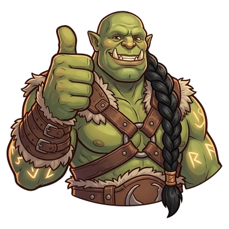
KupgushAbrazagigantes CarrlosFlecha Silenciosa
CarrlosFlecha Silenciosa Slim NogginsMartillo Retirado
Slim NogginsMartillo Retirado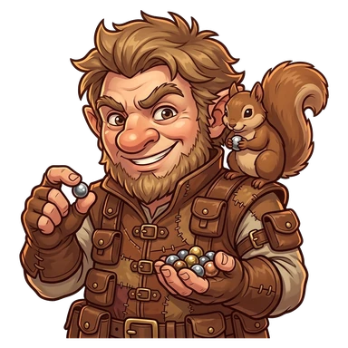
Tink SilvabajoDomador de Ardillas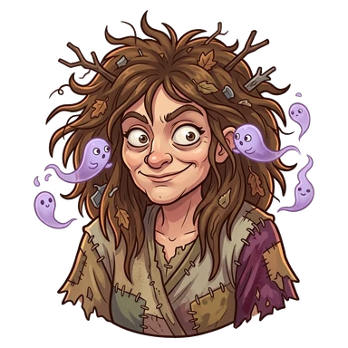
Bibide las Mil Voces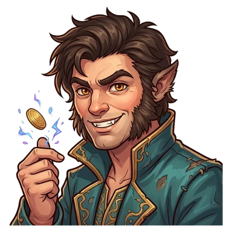
TrevorGarraligera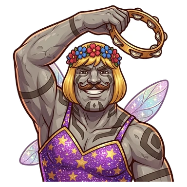
Vavhal Gavoneel Inconfundible VarisAzote de las Mesas
VarisAzote de las Mesas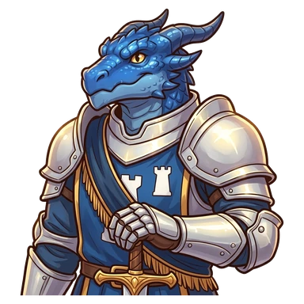
Bronde la Torre Blanca Enrique Fosterel que Sigue la Aguja
Enrique Fosterel que Sigue la AgujaLeyendas
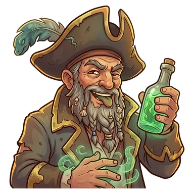
Xerth"Lengua Verde", el Inverificable LavekPortador de la Puerta
LavekPortador de la Puerta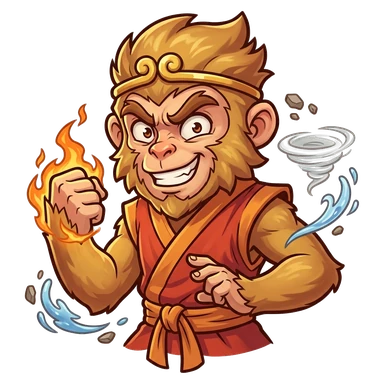
TakuanPuño de los Cuatro Elementos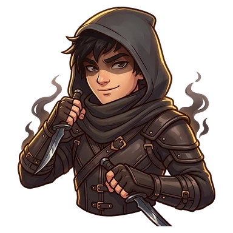
Elionila Sombra Silenciosa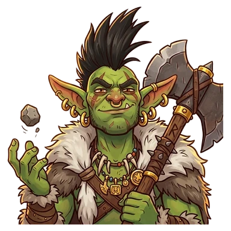
RagnukPríncipe de los TraknukAventureros comunes
No tienen habilidad ni gesta, pero cada uno trae una manía al azar. Si reclutás el mismo dos veces, el segundo es "primo de".
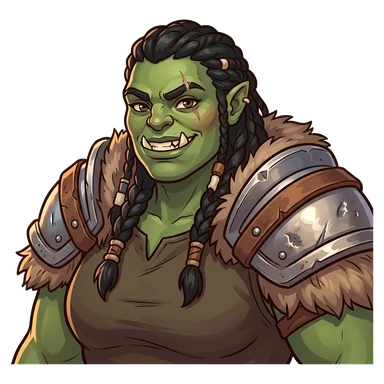
BrakkaGuerrero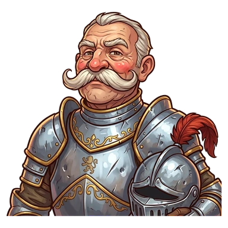
Sir BartoloGuerrero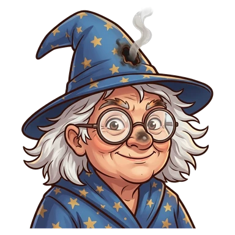
AgathaMago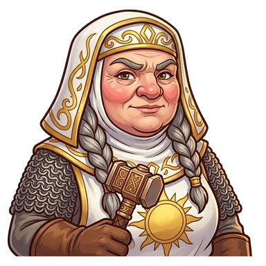
Hermana PrudenciaClérigo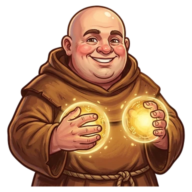
Fray TomásClérigo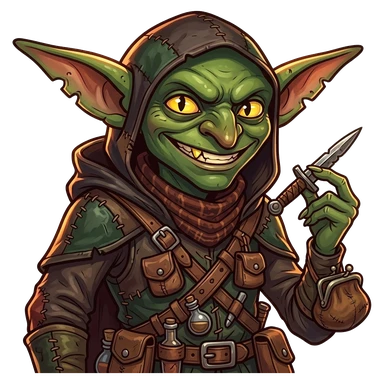
SnikPícaro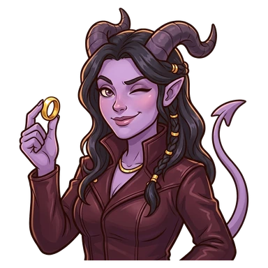
ZafiraPícaro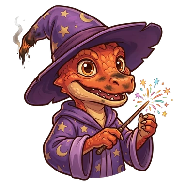
KiboMago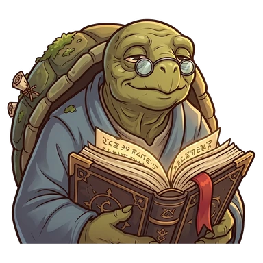
TobíasMago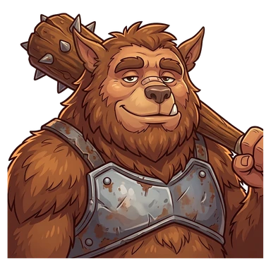
GrumoGuerrero